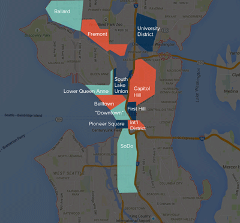
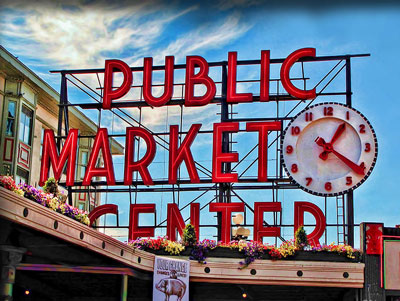

Festivities
Getting to the Venue

Westland Distillery is located at 2931 1st Avenue South in the SoDo (South Downtown) neighborhood of Seattle. At 13,000-square-feet and 60,000 proof gallons of spirit per year, it's the nation's largest craft distillery specializing in single malt whiskey.
SoDo is an industrial area, so street parking should be pretty easy on a Saturday evening. There are also several paid lots around the neighborhood. If you're driving, please ensure you have a designated driver!
If you'd rather not drive, Seattle has several options for hiring a car including Lyft, Uber, and typical taxi services like YellowCab (206‑622‑6500). Another fantastic alternative is Black Crown Car (206‑722‑7696) which will help you end your night feeling like a rockstar.
During the Event
The evening will begin with a short ceremony, after which we will host a cocktail hour and then a reception with dinner and dancing. During the reception, Westland's master distiller will give tours of the distillery and hold a whiskey tasting. Also, we enthusiastically encourage you to visit the photo booth throughout the reception.
The formal portions of the evening — including the ceremony and events like the first dance — will be unplugged, which means we are asking everyone to put away their phones and cameras. Our photographer Jenny will be taking plenty of snaps throughout the night that we will share in the photo gallery soon after the event.
Food & Drinks
Dinner will be provided by El Camion, Seattle's best taco truck. They will be offering tacos, burritos, and gorditas filled with carne asada (grilled top sirloin), pollo asado (grilled chicken), white fish, or vegetables.
Cupcakes from The Yellow Leaf Cupcake Co. will be served after dinner (gluten-free cupcakes will be served too!).
Beer and wine will be available throughout the evening, as well as whiskey samples from a Westland's whiskeys and non-alcholic beverages for those designated driving or who just want something non-alcholic.
Visiting Seattle
Where to Stay
Downtown, Belltown, Lower Queen Anne, Capital Hill, First Hill, South Lake Union, International District, and SoDo are a walk or bus ride from Seattle's most popular tourist attractions. Ballard, Fremont, or the University District are a little farther out, but can be feasible and less expensive. The University District has pretty good bus service to downtown, too. Street parking might be tricky, though.
Staying outside of downtown can mean you'll be in surban areas that don't have much going on, and getting to what you want to see might mean traffic and paying for parking. AirBNB can be a great alternative to hotels, both because they can be more affordable and because you can stay in a part of the city that Seattlites live in, too.
Parking & Driving
If you stay in the downtown corridor and don't plan to venture much outside of the neighborhoods listed in Where to Stay, public transit can be a viable option. What you save in rental car fees may be offset by cost of housing, though, as it can be pricey. The area around the Westland Distillery has few public transit options on Saturday nights, unfortunately, so expect to take a cab or an Uber/Lyft to get there and back.
If you are interested in exploring Seattle's many outdoor options or the areas outside of the downtown corridor, a car is likely to be necessary. You'll also benefit from a car in some of the farther-flung Seattle neighborhoods like Ballard, West Seattle, and Georgetown.
Street parking is a hassle, like in most cities. If you're renting a car, make sure to ask about your parking options before booking a place to stay.
What to See & Do
We picked September because the weather in Seattle is reliably pretty nice. Pack layers, but expect it to be relatively mild and, unless we're deeply unlucky, dry (it turns out that it doesn't always rain in Seattle, but Seattlites prefer that you think it does). The days will be pretty long and the sunsets should be gorgeous.
We chose a weekend with no big events going on, but nice weather means that the locals are out and about as much as the tourists. Traffic might be a pain and trendy restaurants will be busier than usual, so plan ahead, especially if you're going anywhere that requires you to use a highway, cross a body of water, or both.
Seattle has a thriving music scene, great food and coffee, and more micro-breweries and micro-distilleries than you can shake a stick at. Each neighborhood has its own things to see and eat, to the point that Seattle can feel more like a collection of neighborhood islands more than a cohesive city. In the city proper, neighborhoods tend to be easily walkable, but if the word hill
is in the name, you might be in for a workout. In the suburbs, a car is pretty necessary.
Registry
So you want to get us stuff...
First off, thank you. Thank you for braving Seattle traffic, dealing with airports and jetlag, and breaking out your nice clothes, all for us. Just showing up at our wedding means a lot to both of us.
Usually, couples register for gifts to set up a new home. We already have a home and more stuff than really fits in it. Also, we're driving to the wedding and then back to San Francisco, and we won't have a lot of room to bring things back with us. In leiu of gifts, please consider donating to one of these charities:
If you would prefer your gift benefits us directly, we are working towards buying a house of our own and would very much appreciate a contribution towards our house-buying fund.
Photos
Engagement Photos